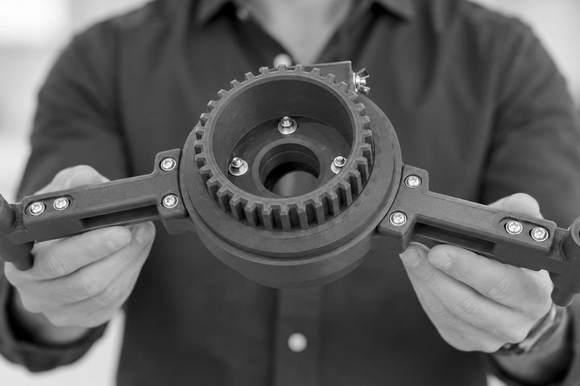
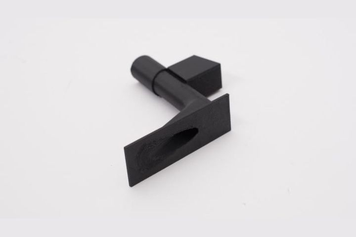
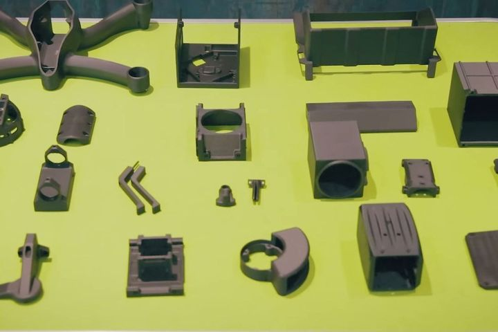

歐洲國防單位與一級供應商｜國防維修工具、載具臨時件與無人機零件的需求點列印
- 連續纖維強化搭配 Onyx 基材，拉伸強度比未強化塑膠最高提升 160%，機械性質可比 6061 鋁
- Onyx＋Kevlar 列印的車輛臨時減震件，實地測試跑了數百公里
國防 / 航太 / 野戰部署
X7 Field Edition 是針對野外部署、國防維保與高機動應用所設計的 Markforged 工業級複合材料 3D 列印方案。若您需要在網路不穩定、環境艱困或要求快速補給的場景製造強韌零件，X7 Field Edition 是更合適的選項。
產業背景
X7 Field Edition 的核心價值在於把高強度複合材料零件的製造能力，帶到更接近任務現場的地方。對於國防、艦艇維保、外場支援與遠端作業環境而言，快速製作夾治具、備件與支援工具，往往比追求極大量產更重要。
推薦切入
加固機箱、支援連續碳纖維與 Kevlar®，適合要求可靠與可攜性的部署場景。
以高剛性、低重量材料支援野外支架、工具、固定座與防護件。
支援列印管理與數位零件庫，讓多地點、受控流程的製造更一致。
導入價值
減少等待外部備件與返廠維修的時間，讓任務現場更快恢復運作。
把低量高價值零件改為現場按需製造，減少少量外包的高成本。
降低單點供應商與物流延遲風險，提高任務與維修彈性。
官方客戶案例



需要更具體的建議？
如果您在評估國防、艦艇、航空維保或外場任務支援場景，我們可以協助您判斷 X7 Field Edition 是否合適。
聯絡 Markforged 台灣